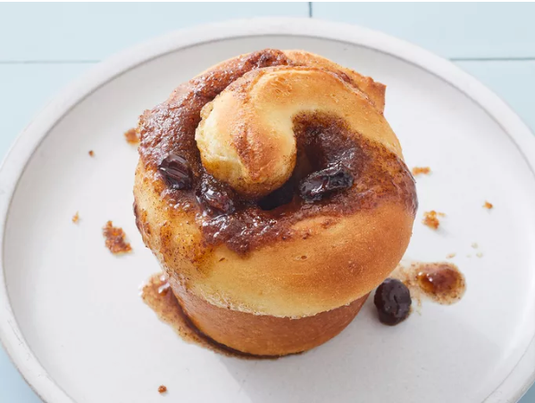

Cinnamon Rolls

These homemade cinnamon rolls can be whipped up in only 90 minutes.
Cinnamon rolls are the epitome of cozy indulgence, featuring soft, fluffy dough spiraled with a generous filling of cinnamon, sugar, and butter.
These delightful pastries are often started with a simple yeast dough, rolled out into a rectangle, then smothered in a mixture that’s sweet, spicy, and irresistibly buttery.
Once rolled, sliced, and baked, they puff up into golden swirls with invitingly warm centers.
The finishing touch is a smooth, rich glaze or creamy frosting, drizzled or spread over the warm rolls, seeping into every spiral.
Ingredients
- 3/4 Cup of Milk
- 1/4 Cup of Butter, soften
- 3 1/4 Cups of All-purpose Flour
- 1/4 Cup of White Sugar
- 1 Pkg of Instant Yeast
- 1/2 Teaspoon of Salt
- 1/4 Cup of Water, warm
- 1 Cup of Brown Sugar
- 1 Tablespoon of Ground Cinnamon
Steps
- Heat milk in a small saucepan until just hot to touch or a few bubbles form around the edge.
Remove from heat and stir in margarine until melted; set aside
- Combine 2 1/4 cups flour, white sugar, yeast, and salt in a large bowl. Add milk mixture, water, and egg; beat well.
Add remaining 1 cup flour, 1/2 cup at a time, stirring well after each addition.
- Turn dough out onto a lightly floured surface and knead until smooth, about 5 minutes.
Cover with a damp cloth and let rest for 10 minutes
- While dough is resting, mix together brown sugar, margarine, and cinnamon in a small bowl. Set aside.
- Preheat the oven to 375 degrees F (190 degrees C). Grease a 12-cup muffin pan.
- Roll dough out on a lightly floured surface into a 12x9-inch rectangle. Spread brown sugar mixture over dough.
- Roll up dough and pinch seam to seal. Cut into 12 equal rolls.
- Place cut-side up in the prepared muffin cups. Cover and let rise until doubled, about 30 minutes.
- Bake in the preheated oven until browned, about 20 minutes.
Remove rolls from muffin cups to cool on a wire rack. Serve warm